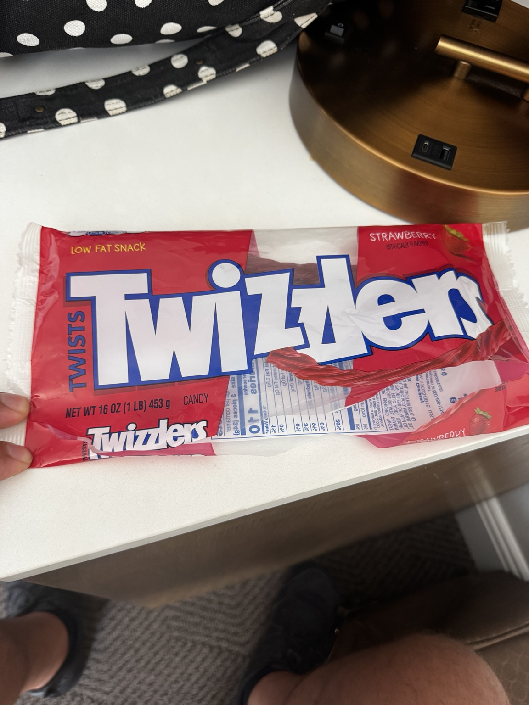
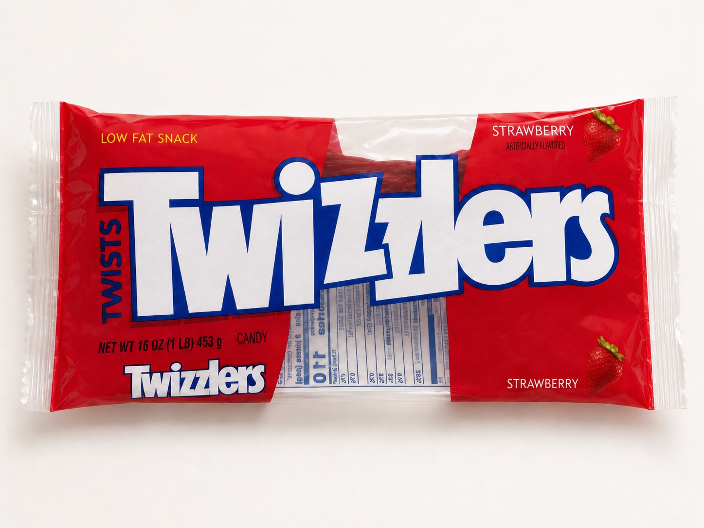
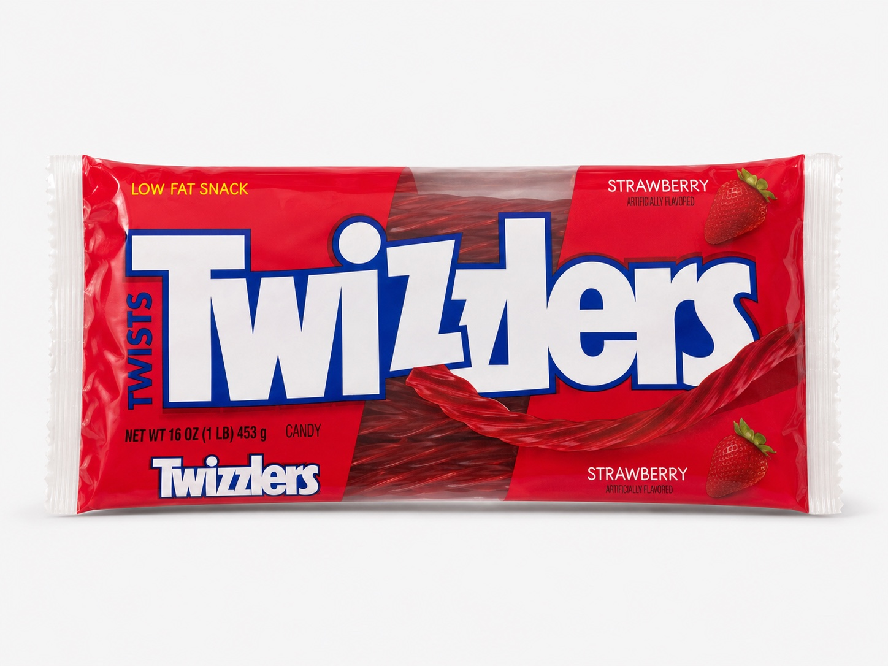

Case 01 • CPG reconstruction
Damaged package to credible retail product



Assignment
Reconstruct the torn front wrapper as a believable unopened retail package while using the intact visible packaging as the source of truth.
Why the intermediate failed
- It cleaned and centered the package successfully
- It still placed nutrition/back-label content on the front face
- It therefore looked polished while violating the central instruction
- The corrected result restores coherent front-package structure and a transparent candy window
Constraint-based prompt excerpt
Preserve the logo, red wrapper, clear candy window, strawberry graphics, crimped white ends, glossy plastic, wrinkles, and package proportions. Remove exposed back-label information from the reconstructed front surface unless it belongs on the actual front design.
Evaluator conclusion
A result can be visually polished and still fail if it contradicts the package’s front/back logic. Product truth takes priority over decorative cleanup.